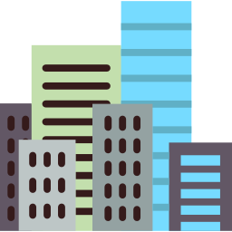
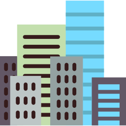

I'm Anupriya.
a designer.

a designer.

I'm an In-building Coverage Designer for Cellular Technologies & WIFI. Alos started to Learn & Develop web/Web-apps & IOS-Apps. Currently resides in New Zealand.
I started to learn my Web/Web-apps Development & IOS Development my self.Still i continue to explore possibilities with frame works & languege such as Bootstrap/django/flask & python to develop web and web-apps.
I started my Telecommunication career in 2008 at Sri Lanka's #01 Operator as IBS Designer and over the time worked at several Telecommunication Companies and ended Telecommunication career at Sri Lanka in 2019 as Enterprise Solutions Implementation Engineer.
Enthusiasts to Electronics/Explore possibilities with Arduino/Raspberry Pi to Develop IOT Application.Aslo IOS-Apps using Swift & Web/Web Apps Development using Bootstrap/django/Flask Frame works & Python .
CONTACT ME